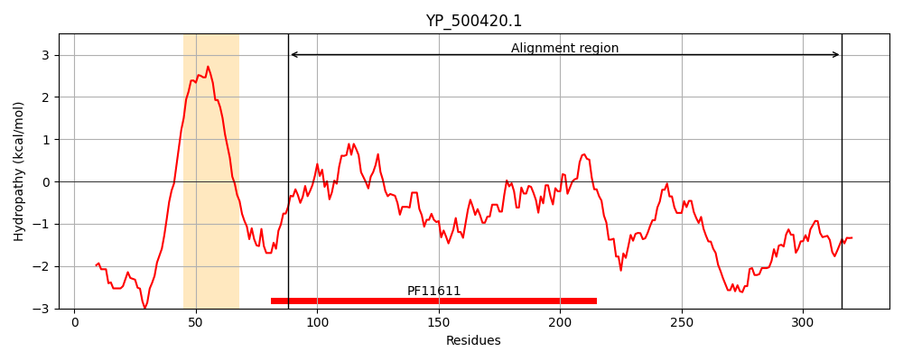
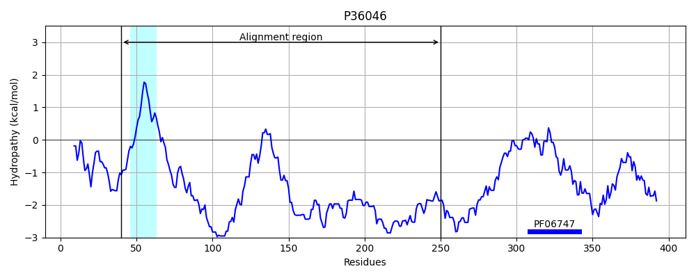
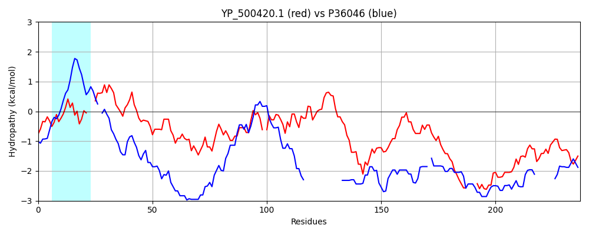

Hit Accession: P36046
Hit TCID: 3.A.8.1.1
Hit Description: gnl|BL_ORD_ID|10037 gnl|TC-DB|P36046|3.A.8.1.1 Intermembrane space import and assembly protein 40, mitochondrial - Saccharomyces cerevisiae (Baker's yeast).
Mach Len: 237
e:0.000350
Query TMS Count : 1
Hit TMS Count: 1
TMS-Overlap Score: 0.000000
Predicted Substrates:CHEBI:8526;protein polypeptide chain
BLAST Alignment:
Score: 96 , Bit scores: 41 bits, E-value: 3.5e-04, Alignment length: 237, Percentage identity: 21
Query: 88 KNGDLEVTVNSVETMKSVGPSL---APTNAKGIFVVADVTIKNKGKEALTIDSSMFKLKSGDKTFEADNTGSMSANQSDNGSIENSFFLQRINPDSTAQ-GKIVFDVSENIANAKDKKLEVISSLFSVKKITFDLSDAKKTSKAKKDKQDTEVAVASSNSDNVSYEASATTPATTSSADTDSEDSEKS----SKDEDKQNASKSDKSSVEKSESNEETAPVEPMPHSKPTTSEAPPS 316
+N + E T + + S+ +L AP N K +F V +E L+ D ++D G + +++D +I A+ G++V E+ +++DK D ++K ++K + + + +N+S E S + + D ++ SEK S DE Q DK++ E + EE+ SK T S++ S
Sbjct: 40 RNSNQEKTAGFIMGILSMAGALYFIAP-NRKPLFASRKVESDKTAEEELSSGGEQSPENEDDNNSKSDENGDDNDSKNDETEAGPQLGGDKIGASKVAEDGELVVLAEEDNKSSEDK----------------DTDESKVSTKDDEQSNEDNATANNQKDENISSENSEEN-TSDKTLDNNAGSSEKKDPEHSDDEKSQQGQSDDKTTTEDNNGEEES--------SKKTVSDSENS 250 | Protein Hydropathy Plots: |
|---|
|  |  |
Pairwise Alignment-Hydropathy Plot:
|
|---|
|  |